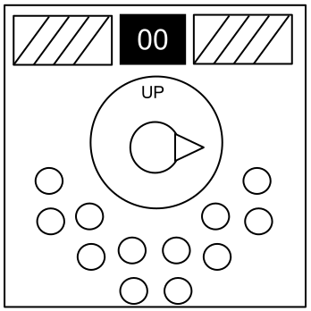

Odnośnie Gałek
Niepotrzebnie skomplikowany i nieskończenie domagający się uwagi. Wyobraź sobie co by się stało, gdyby to ustrojstwo było używane do stworzenia czegoś innego niż diaboliczne łamigłówki.
-
Gałka może być ustawiona w jednym z czterech położeń.
-
Gałka musi być we właściwym położeniu, gdy licznik czasu modułu dojdzie do zera.
-
Właściwe położenie można określić na podstawie konfiguracji dwunastu włączonych/wyłączonych diod LED.
-
Położenia gałki odnoszą się do napisu „GÓRA”, który może zmieniać pozycję.
Konfiguracje diod LED
Położenie prawe:
Położenie lewe:
Położenie górne:
Położenie dolne:
Jeśli żadna z powyższych konfiguracji nie pasuje, ustaw gałkę w położeniu dolnym.
Legenda tabeli:
| X | Dioda musi być włączona
|
| | Dioda musi być wyłączona
|
| . | Dioda może być ignorowana
|